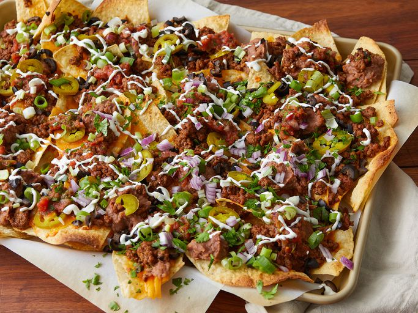

Back home
Super Nachos

Image credit: DOTDASH MEREDITH FOOD STUDIOS
Description
Nachos topped with ground beef, cheddar cheese, refried beans, tomatoes, olives, salsa, sour cream, green onions, and sliced jalapeño peppers.
Recipe shamelessly lifted from Allrecipes, because I wanted a nacho recipe.
Ingredients
- aluminum foil
- 1 pound ground beef
- 3/4 cup water
- 1 package taco seasoning mix
- 1 package restaurant-style tortilla chips
- 1 cup shredded sharp Cheddar cheese, or more to taste
- 1 can refried beans
- 1 can pitted black olives, drained and chopped
- 1 cup salsa
- 1 cup sour cream, or more to taste
- 4 green onions, diced
- 1 can sliced jalapeño peppers, drained
Instructions
- Preheat the oven broiler. Set the oven rack about 6 inches from the heat source. Line a baking sheet with aluminum foil.
- Gather all ingredients.
- Cok and stir ground beef in a skillet until meat is crumbly and no longer pink, 5-10 minutes. Drain excess grease. Stir in water and taco seasoning mix, simmer until beef mixture has thickened, 8 to 10 minutes.
- Spread tortilla chips on baking sheet. Top with cheddar cheese, then dot with refried beans and ground beef mixture.
- Broil in the preheated oven until cheese is melted, 3 to 5 minutes. Top nachos with olives, salsa, sour cream, and jalapeño peppers.
Trans Rights are Human Rights!